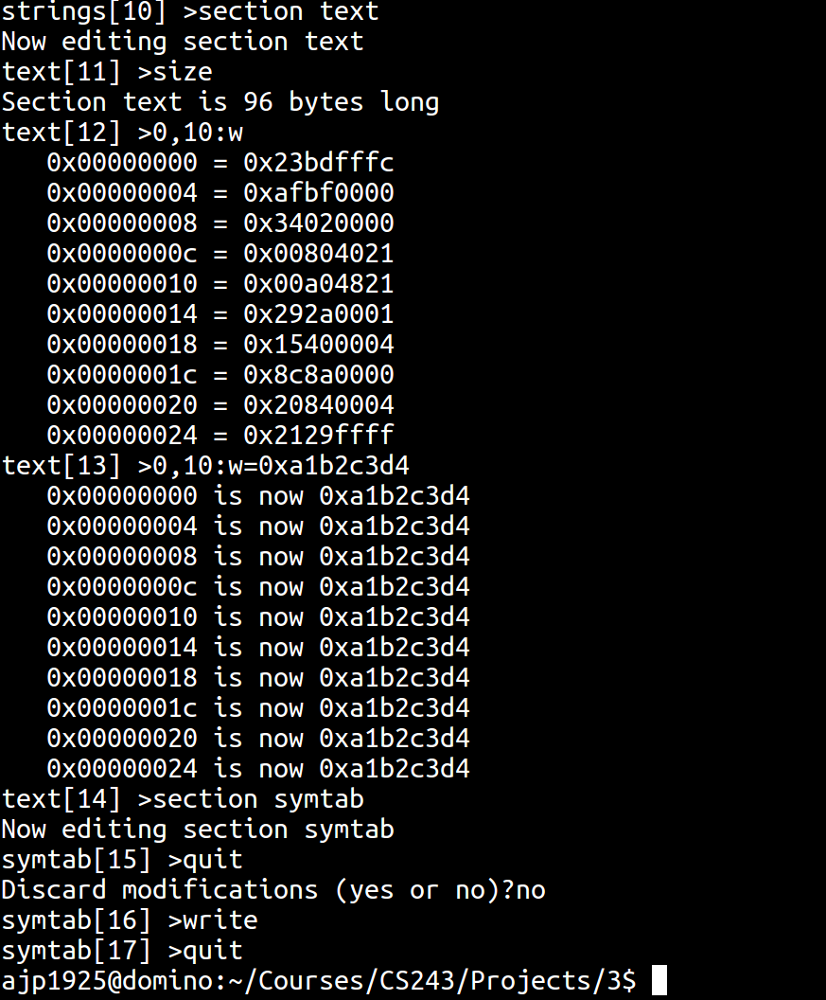
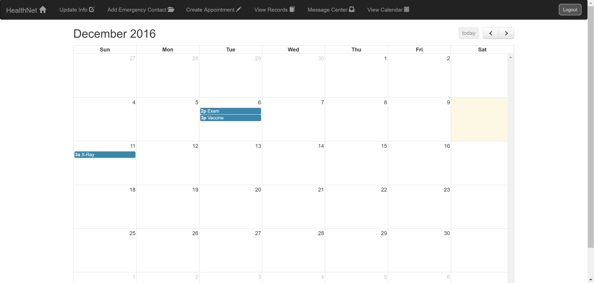
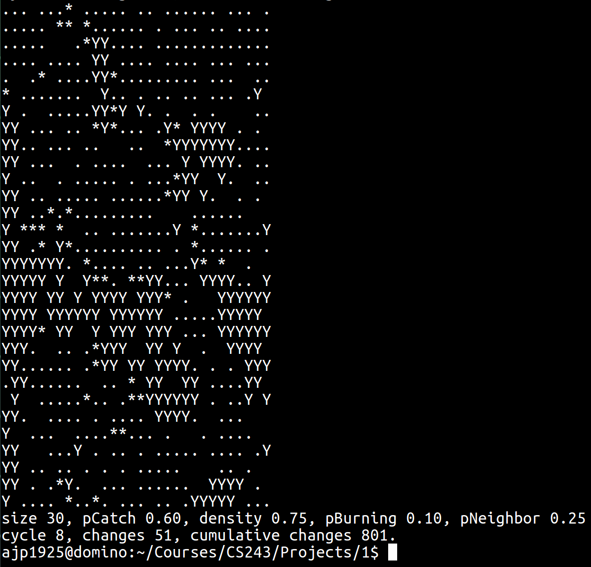
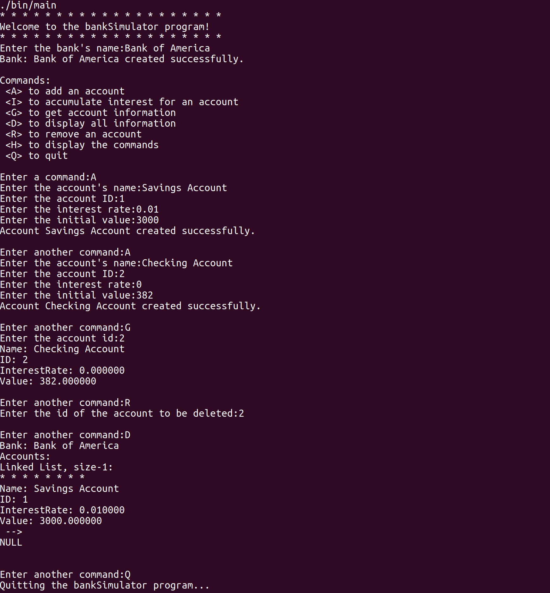

This website is on my Github, it was created from scratch using just HTML, CSS, and a little bit of
Javascript. Cool features include a navbar and a responsive design.
To run the jar file: "java -jar QueenProject.jar default GUI"
Java project that determines a configuration on a chess board such that n queens can fit on the board without
being in danger of attacking each other. The program has the ability to use a command line interface or a
graphical user interface with JavaFX. This project incorporates backtracking in Java.
Object and Load Module Editor:

Project for CSCI-243, The Mechanics of Programming. The project was developed in C and allows the user to view
and edit object and load modules written for the MIPS R2000 CPU from their binary form. The program works by
reading in the specified file into dynamic memory. Then the user has the ability to view certain sections of
the data and for most sections they are able to edit the binary data in memory. When the user in finished they
can either exit the program and discard any changes they have made, or overwrite the file with the changes from
their editing session. For extra credit, I developed a command that shows the user's command history and allows
them to repeat any of the ten most recent commands using the '!' symbol followed by its number.
Initial login credentials for use with jar file: Username = "admin", Password = "password"
Project done for Engineering of Software Subsystems class in Java. The project consisted of creating a
command line interface for a given API that a library book management system would use, then developing a GUI
that allowed easier use of the system. The management system allowed the library to purchase books from the
Google Books store, users could checkout books, employees could manage the users, etc.
The project was coded in Java using JavaFX for the GUI. Topics that were learned and used for this project
include Threading, Serialization, Google Books web service usage, Object-Oriented design pattern usage, and much
more.
Personal project in C++ that uses a brute force backtracking algorithm to solve a sudoku puzzle. The user can
edit the input file to set all the values for the initial board, then when the program is run it reads the file,
searches for a solution and either prints the solution or tells the user that a solution does not exist. Using a
brute force algorithm can be a problem in some situations, however with the small scope of this project and the
performance of C++ a solution is found within a fraction of a second.
HealthNet: 
Web Application for a software engineering class. The project was completed using the framework Django and
python. The application is used for hospitals to organize information about employees and patients and can
store medical records for the patients. From the main page a patient or employee can login and view their
account information and they are able to schedule appointments with doctors. On the accounts homepage there is
a calendar that shows all appointments with either patients and doctors depending on who is logged it. Admins
can view information for all users and can change things as necessary.
Wildfire: 
Project for CSCI-243, The Mechanics of Programming. The project was developed in C using vim and creates a
simulation of a wildfire in the forest. The program starts out by generating a forest with a given density
and a percentage of the trees to start out burning. By default it displays this with the settings on the
command line and uses cursor control to overlay the grid of the next cycle on top of the previous one
creating a "poor mans animation." There are settings that can be applied to the program through command
line options including the initial density, the percentage of trees burning at the first cycle, the
probability that a tree will catch on fire, etc. In the image above there are four states that a grid cell can
have, empty (represented by a space character), tree (Y), burning (*), or burned(.).
A small personal project that uses C++ to play tic-tac-toe on the command line. When the game is
started two players alternate taking turns by entering the coordinates of the square they would like to claim,
the game ends when one player gets three squares in a line or there are no more possible moves resulting in a
stalemate. The project uses only one class, the game board, to simulate the game. The code can be found on my
GitHub page.
This is a small project that compares a handful of common sorting algorithms in C. It uses integer arrays to
implement bubble sort, insertion sort, selection sort, heap sort, merge sort, and quick sort. The program is
compiled using the GNU compilers optimization level 3 (-O3 flag) which greatly reduces the time it takes to run.
Bank Simulator:

A small personal project that uses C++ to simulate a bank storing accounts with interest
compounded yearly. It features a command line interface where the user initially creates the name of the bank,
then has the ability to add accounts, generate interest for them, delete accounts, display one account's
information, or display all the banks information. Although this program is far from practical, it helped me
learn about classes in C++ and substantially helped me understand how pointers work in C/C++. Clicking on the
github link will allow you to view the code so you can download it, compile on your system and run the program.